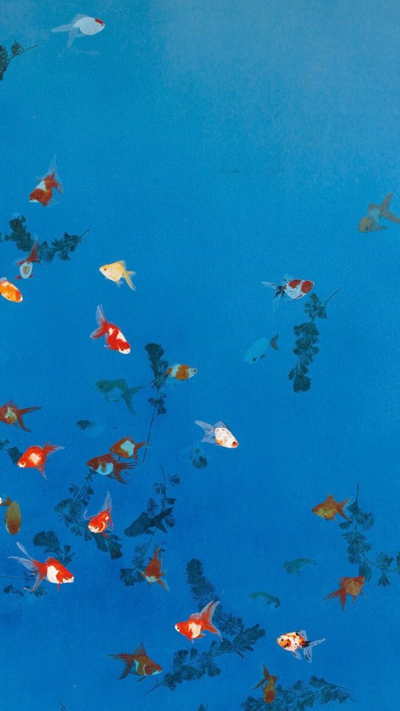
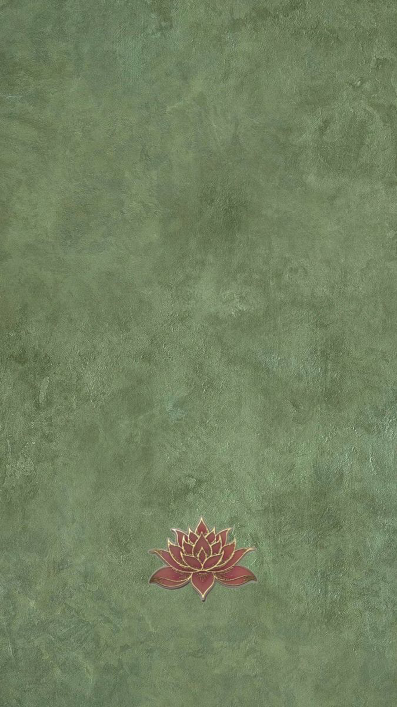
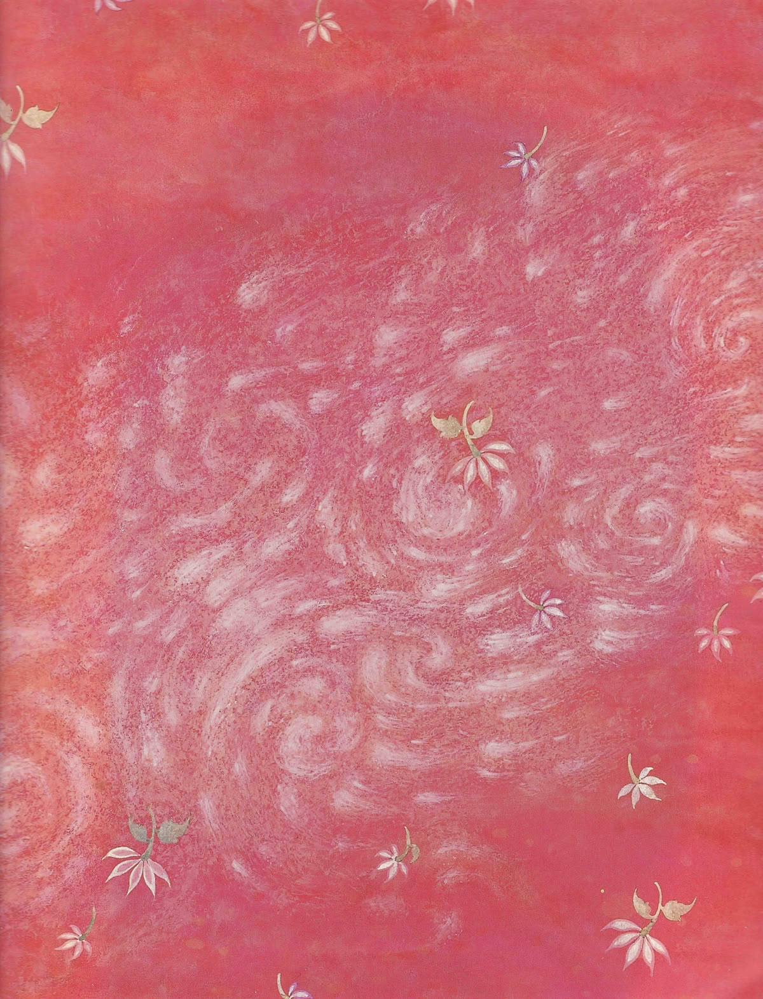
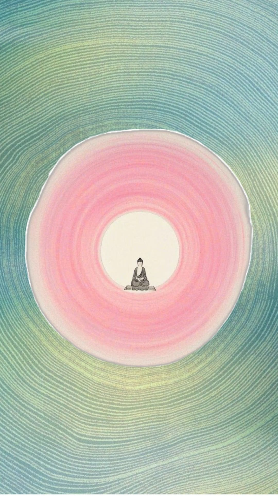
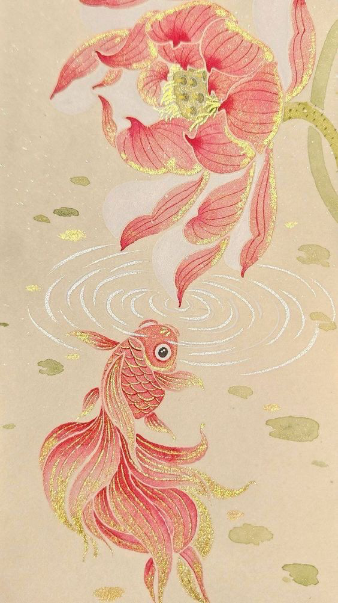
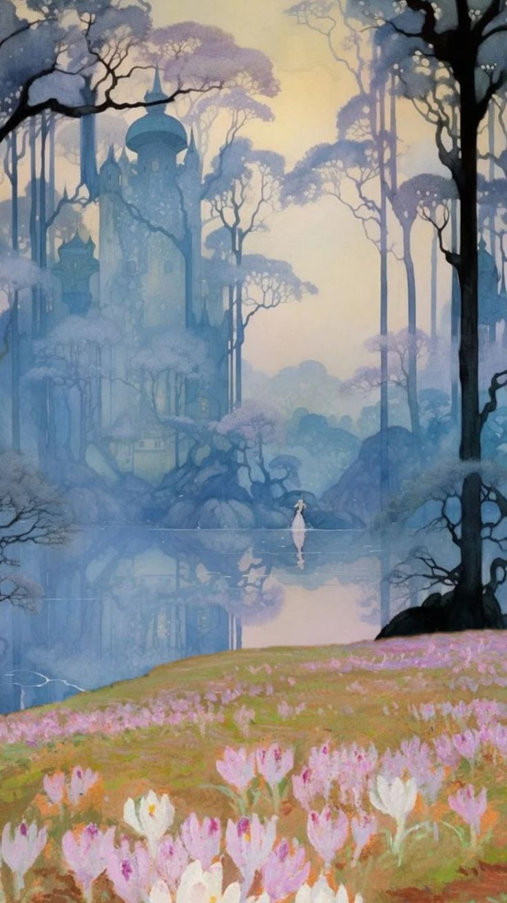
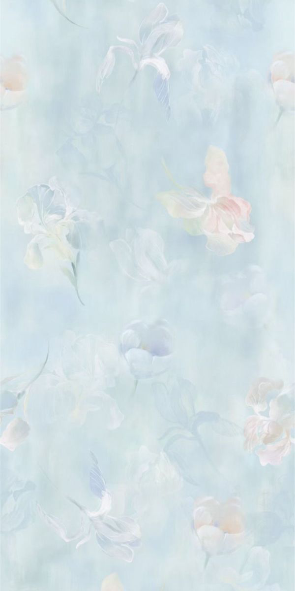
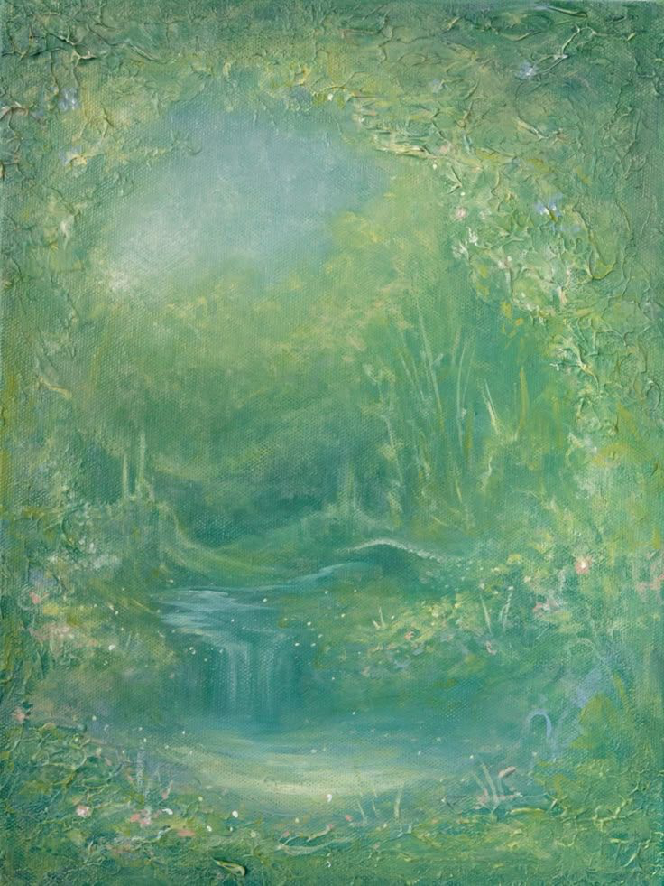
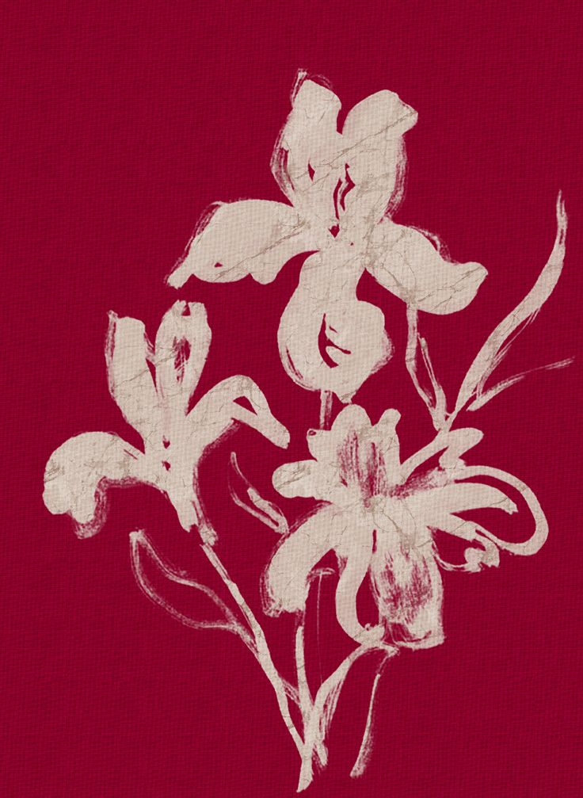
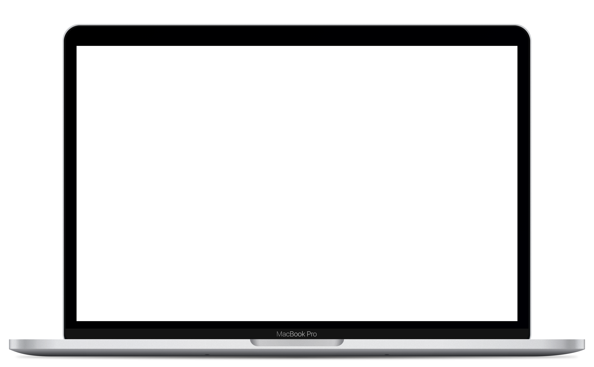

/kah-tah-LEE-yah/
(1) One who moves fluidly between code, design, and storytelling — currently studying computer science and business marketing at San Francisco State University
(2) A systems thinker who arrives at the answer sideways; known to sketch three directions at once, talk through all of them out loud, and still make it work
See also: spontaneous, expressive, always making something









Making stability accessible for aging adults through passive sensing, personalized insights, and quiet, dignified design.
Product Designer
Reimagining fatigue management to be proactive, private, and protective for industrial workers.
Backend EngineerA collection of content, marketing materials, and graphics for a Series A AI-matchmaking startup — prelaunch.
Growth StrategyFull-stack product development for an AI-powered analytics platform helping e-commerce brands predict customer behavior and reduce churn.
Full-stack Engineer
Brand identity and digital experience design for a luxury real estate firm — connecting the right homes to the right people, the right way.
Product DesignerA peer-to-peer academic aid platform built for SFSU students — connecting tutors, study groups, and resources in one place.
Full-stackPersonal brand identity — visual language, motion assets, and digital presence built from scratch to reflect a multidisciplinary practice.
Brand DesignerVisual identity, print materials, and digital graphics for a Series A AI startup — building a brand from zero to launch.
Graphic DesignerHuman-computer interaction research on accessible interfaces for older adults — usability studies, prototyping, and design recommendations.
Researcherwhat's in my sandbox
contact me
I'm always open to new projects, collaborations, and conversations. Whether you have a question or just want to say hi — my inbox is always open.